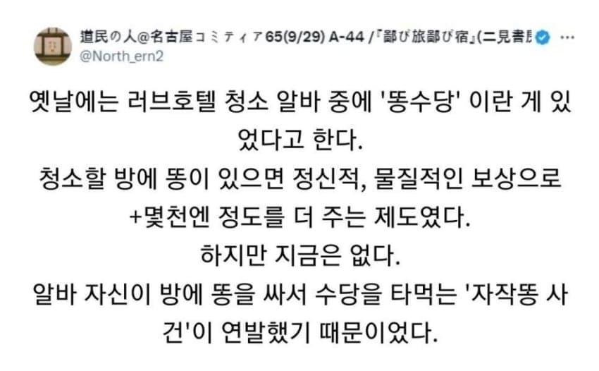

47 · 16 · 12 시간 전 · 원문

수집 당시 댓글 16개
오나홀소믈리에 · 14 시간 전
버스터머신 · 14 시간 전
일본 러브호텔에서 청소 3개월정도 했지만 가장 짜증나는 손님은 여/여 커플임
↳ 답글 · 귤밥 · 12 시간 전
설명좀ㄷㄷ
↳ 답글 · 괜춘방춘 · 12 시간 전
온갗 쑤실꺼 버려두는….야채나 햄같은
허미 ㄷㄷ
↳ 답글 · 고추건조기 · 12 시간 전
반찬거리 이득인데
XiJinPink · 14 시간 전
자작똥 ㅋㅋㅋㅋㅋㅋㅋ
체스 · 14 시간 전
완벽한 코브라 효과의 예
nesy · 14 시간 전
똥으로 쌀먹을 하다니
aebaeb · 13 시간 전
뭣 똥을 싸면 돈까지 더 준다고
Vv연옥의사신vV · 12 시간 전
독도 먹고 영양도 먹고
용팔이2 · 12 시간 전
똥이 따듯해서 들켰나보네
↳ 답글 · 미래를구원하는길 · 12 시간 전
그럴듯하내.
↳ 답글 · 댜기 · 10 시간 전
그냥 발생 빈도가 올라가는지만 보면 쉽게 알지..
의사양반과상하이 · 12 시간 전
랑군 · 11 시간 전
댓글
수집 당시 댓글 16개
오나홀소믈리에 · 14 시간 전
버스터머신 · 14 시간 전
일본 러브호텔에서 청소 3개월정도 했지만 가장 짜증나는 손님은 여/여 커플임
· 귤밥 · 12 시간 전
설명좀ㄷㄷ
· 괜춘방춘 · 12 시간 전
온갗 쑤실꺼 버려두는….
야채나 햄같은
· 귤밥 · 12 시간 전
허미 ㄷㄷ
· 고추건조기 · 12 시간 전
반찬거리 이득인데
XiJinPink · 14 시간 전
자작똥 ㅋㅋㅋㅋㅋㅋㅋ
체스 · 14 시간 전
완벽한 코브라 효과의 예
nesy · 14 시간 전
똥으로 쌀먹을 하다니
aebaeb · 13 시간 전
뭣 똥을 싸면 돈까지 더 준다고
Vv연옥의사신vV · 12 시간 전
독도 먹고 영양도 먹고
용팔이2 · 12 시간 전
똥이 따듯해서 들켰나보네
· 미래를구원하는길 · 12 시간 전
그럴듯하내.
· 댜기 · 10 시간 전
그냥 발생 빈도가 올라가는지만 보면 쉽게 알지..
의사양반과상하이 · 12 시간 전
랑군 · 11 시간 전